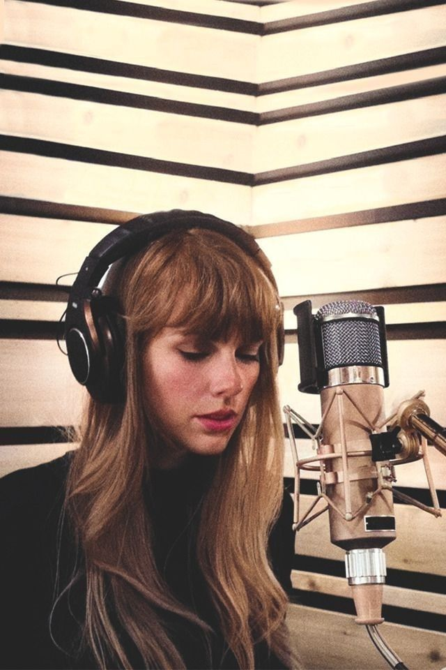

one lyric, every day
a little song
for your day.
A tiny lyric, a new feeling, and a reason to press play.
play♪
TODAY'S TUNE
“
I had the time of my life fighting dragons with you.”
click the lyric for song notes ↻

song notes
Long Live
A triumphant Speak Now track about the people and moments that become legend.
Taylor Swift · Speak Now (2010)
your little library
favorite
tunes.
Save a lyric and it will stay here on this device.
Nothing saved yet. When a tune finds you, tap “save this tune.”
the rotation
six voices
we keep close.
A soft spot for the songs that know exactly what to say.
made for the in-between moments
Keep a lyric.
Keep the feeling.
Today's Tune is a daily pause for music fans. Come back tomorrow for a new line from the artists in our little orbit.